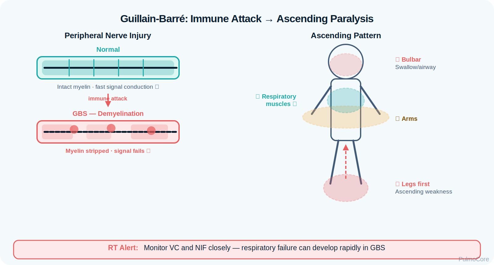
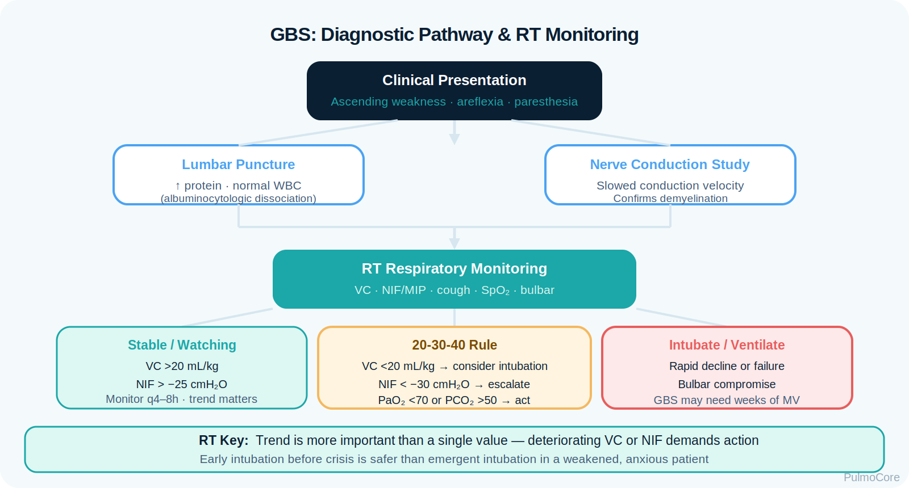

RT Clinical Connection
GBS patients may look comfortable until ventilatory reserve is nearly gone. The RT must trend objective measures, not just SpO₂, because oxygen saturation can remain acceptable while ventilation is failing.
Guillain-Barré syndrome is an acute immune-mediated peripheral nerve disorder that can rapidly weaken respiratory muscles. This module focuses on RT recognition, bedside monitoring, respiratory failure risk, ventilatory escalation, airway clearance, and board-style clinical decision-making.
How this condition is tested: Recognize Guillain-Barré syndrome from preceding infection, ascending symmetric weakness, areflexia, bulbar dysfunction, weak cough, secretion retention, declining VC/FVC and NIF/MIP, rising PaCO₂, and autonomic instability; differentiate neuromuscular ventilatory-pump failure from primary lung disease; select serial respiratory-mechanics monitoring, aspiration precautions, airway-clearance support, oxygen or ventilatory support, and early airway escalation; and reassess trends in mechanics, cough, secretion handling, gas exchange, fatigue, and airway protection.
Directly covered: I.A · I.B · I.C · I.D · II.A · III.C · III.E · III.G · III.I
Depth: Adult and pediatric neuromuscular respiratory failure
By the end of this module, learners should be able to connect peripheral nerve injury, ascending weakness, declining respiratory muscle strength, diagnostic patterns, respiratory monitoring, and escalation decisions.
Watch this quick overview before moving into the disease snapshot.
Guillain-Barré syndrome is not a primary lung disease. The respiratory danger comes from neuromuscular weakness: the diaphragm, intercostals, accessory muscles, upper airway protective muscles, and cough mechanism may fail even while the lungs themselves are initially normal.
GBS patients may look comfortable until ventilatory reserve is nearly gone. The RT must trend objective measures, not just SpO₂, because oxygen saturation can remain acceptable while ventilation is failing.
Associate GBS with ascending weakness, areflexia, albuminocytologic dissociation, declining vital capacity, weak NIF/MIP, aspiration risk, autonomic instability, IVIG or plasmapheresis, and possible mechanical ventilation.
Which statement best describes why Guillain-Barré syndrome can become life-threatening for an RT patient?
GBS usually begins when an immune response after infection cross-reacts with peripheral nerve components. Damage to myelin or axons slows nerve transmission, causing progressive weakness. When respiratory muscles are involved, the patient loses ventilatory strength and cough effectiveness.

Visual placeholder: Show immune attack on peripheral nerves, then connect leg weakness upward to diaphragm, cough, and bulbar muscle involvement.
| Change | Effect | RT Meaning |
|---|---|---|
| Peripheral nerve injury | Weak or delayed muscle activation. | Respiratory muscles may lose strength quickly. |
| Ascending weakness | Weakness starts in legs and moves upward. | Monitor for trunk, diaphragm, and accessory muscle involvement. |
| Bulbar weakness | Swallowing and airway protection decline. | Aspiration and secretion retention risk rise. |
| Autonomic dysfunction | Heart rate and blood pressure instability. | Escalation requires close monitoring and team communication. |
| Weak cough | Reduced secretion clearance. | May need cough assist, suctioning, and airway clearance support. |
Click each hotspot to reveal why that structure matters to respiratory therapy.

GBS often occurs days to weeks after an infection. The immune system mistakenly attacks peripheral nerve components. The most important RT issue is not the original infection; it is whether weakness is progressing toward respiratory failure.
| Associated Factor | Why It Matters | RT Focus |
|---|---|---|
| Recent GI illness | Common preceding illness pattern. | Ask about onset and progression timeline. |
| Recent respiratory infection | May precede immune response. | Differentiate lung infection from neuromuscular failure. |
| Rapidly ascending weakness | Signals progression. | Trend VC/FVC and NIF/MIP frequently. |
| Bulbar symptoms | Increases aspiration risk. | Assess cough, swallow, secretions, and airway protection. |
| Autonomic instability | May cause dysrhythmias or BP swings. | Communicate red flags promptly. |
Choose the best category for each item, then check your answers.
GBS commonly presents with progressive, symmetric weakness, paresthesias, and reduced reflexes. For RTs, the most urgent clinical signs involve ventilatory pump failure, ineffective cough, secretion retention, aspiration risk, and fatigue.
| Finding Type | What the RT May See |
|---|---|
| Neurologic pattern | Ascending weakness, paresthesias, areflexia, facial weakness. |
| Ventilation clues | Shallow breathing, declining VC/FVC, weak NIF/MIP, rising PaCO₂. |
| Airway protection clues | Dysphagia, weak gag, pooling secretions, wet voice, aspiration concern. |
| Cough clues | Weak cough, poor secretion clearance, atelectasis risk. |
| Autonomic clues | Tachycardia, bradycardia, blood pressure instability, dysrhythmias. |
Normal SpO₂ does not rule out impending ventilatory failure. A GBS patient can oxygenate reasonably well until fatigue and hypoventilation develop.
Categorize each finding as an Early GBS Pattern, Ventilatory Warning, or Escalation Sign, then check your answers.
GBS diagnosis is clinical plus supportive testing. RT assessment focuses on respiratory mechanics and airway protection because those findings guide monitoring level and escalation.

Visual placeholder: Pair diagnostic clues with RT monitoring: VC/FVC, NIF/MIP, cough, bulbar function, and ABG trend.
| Assessment | Expected or Concerning Pattern | RT Relevance |
|---|---|---|
| Vital capacity/FVC | Declines as respiratory muscles weaken. | Key bedside trend for ventilatory reserve. |
| NIF/MIP | Becomes weaker/less negative with inspiratory muscle weakness. | Helps detect impending ventilatory failure. |
| ABG | May show rising PaCO₂ if hypoventilation develops. | Late warning when clinical fatigue appears. |
| Lumbar puncture | Elevated protein with normal/low cell count may appear. | Supports diagnosis, not respiratory severity by itself. |
| Nerve conduction study | Demyelinating or axonal features. | Confirms neuromuscular mechanism. |
The safest approach is serial trending. A single number matters less than direction, speed of decline, clinical fatigue, secretion handling, and bulbar involvement.
A GBS patient’s VC is falling over serial checks, cough is weak, and they are starting to retain secretions. What is the best RT interpretation?
Red flags in GBS indicate loss of ventilatory reserve, loss of airway protection, or systemic instability.
| Red Flag | Why It Matters |
|---|---|
| Rapidly falling VC/FVC | Signals declining respiratory muscle strength. |
| Weak or ineffective cough | Raises secretion retention and atelectasis risk. |
| Dysphagia, pooling secretions, weak gag | Suggests bulbar weakness and aspiration risk. |
| Rising PaCO₂ or falling pH | Indicates hypoventilation and ventilatory failure risk. |
| Autonomic instability | Can cause dangerous heart rate or blood pressure changes. |
| Exhaustion or altered mental status | Late sign of failure or poor ventilation. |
GBS treatment includes disease-modifying therapy, supportive care, respiratory monitoring, aspiration prevention, airway clearance, and ventilatory support when needed. RT care is supportive but often lifesaving.
| Intervention | Purpose | RT Connection |
|---|---|---|
| IVIG | Modulates immune response. | Does not replace respiratory monitoring. |
| Plasmapheresis | Removes circulating immune factors. | Used as disease-modifying therapy in selected cases. |
| Serial VC/FVC and NIF/MIP | Tracks respiratory strength. | Guides escalation and ICU monitoring. |
| Airway clearance | Assists secretion removal. | Cough assist, suctioning, positioning, lung expansion as appropriate. |
| Mechanical ventilation | Supports failed ventilatory pump. | Needed when respiratory muscle failure or airway protection failure occurs. |
Respiratory therapists manage Guillain-Barré syndrome (GBS) by assessing respiratory muscle strength, identifying impending ventilatory failure, supporting airway clearance and ventilation, reassessing progression closely, and escalating before complete respiratory collapse occurs.

NBRC-style neuromuscular questions commonly test whether the RT recognizes declining respiratory mechanics, weak cough, secretion retention, bulbar dysfunction, and the need for early ventilatory escalation before overt respiratory arrest develops.
Select the steps in the best general order for a GBS patient with progressive weakness.
Mechanical ventilation may be needed when the ventilatory pump fails, airway protection is poor, or secretion clearance becomes unsafe. Oxygen alone does not correct neuromuscular hypoventilation.
If the question gives GBS plus falling VC/FVC, weak cough, dysphagia, or rising PaCO₂, think respiratory failure risk and escalation — not just more oxygen.
The RT is central to monitoring, documenting trends, airway clearance, escalation communication, ventilator support, and patient safety.
| RT Task | What to Assess or Do | Why It Matters |
|---|---|---|
| Trend mechanics | VC/FVC, NIF/MIP, respiratory pattern, fatigue. | Detects declining ventilatory reserve. |
| Assess airway protection | Voice, swallow, secretions, cough strength. | Identifies aspiration and intubation risk. |
| Monitor ventilation | ABG/VBG trend, PaCO₂, pH, mental status. | Finds hypoventilation before collapse. |
| Support clearance | Cough assist, suctioning, positioning, lung expansion. | Reduces secretion retention and atelectasis. |
| Communicate escalation | Report rapid decline and red flags clearly. | Supports timely ICU or ventilatory planning. |
This guided case reveals one clinical stage at a time. Learners make an RT decision, receive feedback, and then continue.
A 31-year-old patient presents with tingling feet and progressive leg weakness one week after a GI illness. Reflexes are decreased. Breathing appears comfortable.
Decision Question: What is the best RT priority?
Six hours later, the patient’s VC has fallen, NIF is weaker, and cough is less effective. They still have acceptable SpO₂.
Decision Question: How should this be interpreted?
The patient now has difficulty swallowing, a wet-sounding voice, and pooling oral secretions.
Decision Question: What is the major respiratory concern?
The patient becomes fatigued and ABG shows rising PaCO₂ with worsening respiratory effort.
Decision Question: What is the best escalation concept?
Answer each question to complete this activity. Answer choices shuffle each time the lesson opens.
A patient with GBS has normal SpO₂ but falling VC and weaker NIF. What should the RT recognize?
Which finding is most concerning for airway protection in GBS?
Which therapies are used to modify the immune process in GBS?
A GBS patient has rising PaCO₂, fatigue, and weak cough. What is the best interpretation?
No. The lungs may be normal initially. The respiratory problem is neuromuscular weakness causing pump failure, weak cough, and poor airway protection.
SpO₂ measures oxygenation, not ventilatory strength. A patient may oxygenate while VC, NIF, cough, and PaCO₂ trends worsen.
Bulbar weakness can impair swallowing, secretion handling, gag, cough, and airway protection, raising aspiration and intubation risk.
Serial VC/FVC, NIF/MIP, cough strength, secretion clearance assessment, respiratory pattern, ABG/VBG trend, and mental status.
IVIG and plasmapheresis are commonly used disease-modifying therapies. RT care remains essential because these therapies do not instantly restore respiratory strength.
Escalate with rapid decline in VC/FVC, weaker NIF/MIP, bulbar dysfunction, weak cough, secretion retention, rising PaCO₂, fatigue, or autonomic instability.
Guillain-Barré syndrome is an acute immune-mediated peripheral neuropathy that can cause rapidly progressive respiratory muscle weakness. RT decision-making centers on trending mechanics, recognizing airway protection failure, supporting secretion clearance, and escalating before respiratory collapse.
Click the card to flip it. Mark known cards to move them into the completed pile.